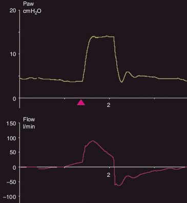

هنگامیکه تلاش دمی بیمار تا لحظه سایکل و بعد از آن ادامه داشته باشد سایکل زودرس روی داده است. در حمایت فشاری این پدیده نادر است ولی می تواند در اثر مقدار بالای آستانه ترایگر بازدمی ایجاد شود. این پدیده سبب می شود که فشار راه هوائی در شروع بازدم از PEEP کمتر شود. بطور همزمان اوج شدت جریان بازدمی نیز کاهش می یابد و متعاقب این اوج کاهش یافته، برای لحظه ای انحراف منحنی شدت جریان بسوی خط پایه مشاهده خواهد شد (تحدب بسوی بالا) که دلالت بر ادامه تلاش دمی دارد، حنی با وجودی که فشار انبار شده در داخل ریه سبب جریان بازدمی شده است. پس از خاتمه تلاش دمی، ادامه افت شدت جریان دمی الگوی طبیعی خواهد داشت.

سایکل زودرس تظاهر می کند با:
۱ - مدت طولانی هواگیری ریه
۲ - افزایش فشار در انتهای دم
۳ - افزایش اوج شدت جریان بازدمی
۴ - فقدان جریان بازدمی
۵ - انحراف گذرای شدت جریان بسوی صفر پس از اوج شدت جریان بازدمی